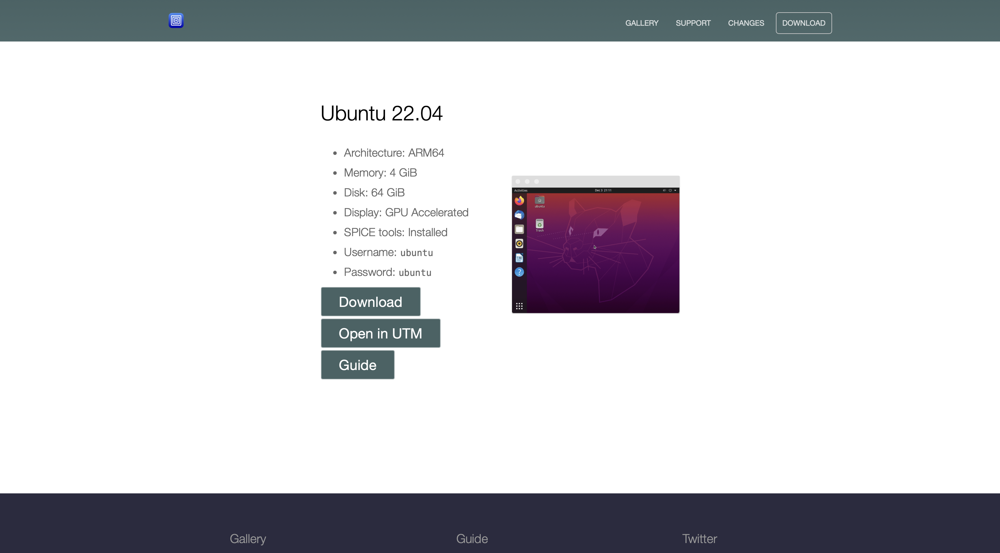
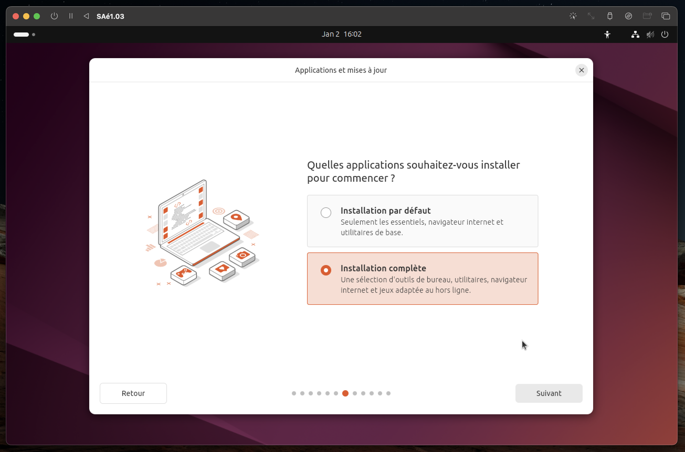

Notre Machine Virtuelle
Pour ce projet, nous avons dû télécharger une machine virtuelle de type Linux sur notre propre ordinateur et effectuer correctement les configurations d'installation. Nous allons maintenant vous expliquer étape par étape comment nous avons procédé avec des captures d'écran.
Nous expliquerons également comment nous l'avons fait en montrant les étapes "Création d'un compte administrateur", "Création de deux utilisateurs", "Création d'un groupe" requises pour le projet avec des captures d'écran.
Diagramme de Gantt du travail de la période :
Bien sûr que pendant la réalisation de cette SAé, nous nous sommes beaucoup entraidés, et nous avons même fait la plupart de nos tâches ensemble. Mais lorsque nous avons préparé le diagramme de Gantt, nous avons placé les tâches principales et montré les principales personnes responsables en face de ces tâches.
Semaine S1-B2
Les objectifs de cette semaine étaient :
Comme on avait expliqué au début de ce rapport aussi. On avait une MacAir comme machine, donc on a préféré utiliser UTM comme hyperviseurs pour pouvoir installer Linux et aussi réaliser notre projet.
Ce qu'on a fait
-
D'abord, nous avons installé UTM sur notre machine.
Vous pouvez accéder à la page UTM et télécharger UTM sur votre ordinateur en cliquant ici ! -
Et nous avons complété l'installation sur notre ordinateur.
Une fois que l'application est téléchargée, vous pouvez la trouver comme dans l'image ci-dessus, et en cliquant sur l'icône de disk, vous allez être dirigé vers le guide d'installation d'application sur votre ordinateur directement. Sur les MAC, c'est assez facile.
Quand vous allez arriver à cette étape, il faut juste rester appuyé et glisser l'icône d'UTM sur le dossier d'Applications qui apparaît juste à côté.
Maintenant, vous pouvez trouver UTM sur votre ordinateur, dans les applications.
Semaine S1-B3
Les objectifs de cette semaine étaient :
Ce qu'on a fait
-
Premièrement, Nous avons installé notre machine virtuelle basée sur Linux en suivant les étapes nécessaires via UTM.
Quand vous allez ouvrir UTM, en premier vous allez voir cette page :
Donc ici, il faut cliquer sur "Créer une nouvelle machine virtuelle (VM)"
-
Et puis, vous allez avoir cette page, ici il faut choisir "Virtualize" :
-
Maintenant ici, il nous demande de choisir le système d'exploitation qu'on veut installer sur la machine virtuelle, donc on choisit "Linux".
-
Après cette étape ; Pour charger le fichier ISO de la version Linux que nous souhaitons créer sur notre ordinateur, nous devons accéder soit au site Web UTM, soit au site Web Ubuntu. Nous avons trouvé et téléchargé le fichier ISO dont nous avions besoin sur le site Web d'UTM. Parce qu'UTM a une page de "gallery" sur leur site web, et donc ici vous pouvez trouver tous les dossiers d'ISO des différents systèmes d'exploitation et leurs différentes versions que vous voulez installer. Nous vous laissons ci-dessous les liens vers le site Web d'UTM et le site Web d'Ubuntu. Vous pouvez donc télécharger le fichier ISO.
Vous pouvez aller sur le site en cliquant sur l'image :
Pour installer le dossier d'ISO sur Ubuntu :
-
Une fois que le dossier d'ISO est installé, on peut continuer de faire l'installation de Linux.
-
Ici, on doit mettre le dossier d'ISO qu'on vient d'installer, dans le champ "Boot ISO Image", et puis on clique sur "Continuer".

-
Maintenant, on doit choisir la place de mémoire qu'on veut donner à notre machine virtuelle. Nous avons trouvé assez de 4096 MiB pour mémoire, et puis il faut choisir les cœurs de CPU que vous allez donner à votre machine virtuelle. Ici encore, nous avons trouvé assez de 4 CPU pour créer notre machine virtuelle, puis vous pouvez faire "continuer".
-
Après cette étape, vous devez choisir la taille de stockage de votre machine virtuelle, nous avons choisi 64 Go. Cependant, vous devez vous assurer qu'il y a suffisamment d'espace sur votre ordinateur pour télécharger l'hyperviseur, pour télécharger le dossier ISO et pour donner à votre machine virtuelle la taille que vous jugez nécessaire.
-
Pour cette étape, vous devez parcourir les dossiers de votre ordinateur que vous voulez trouver directement dans votre machine virtuelle. Nous avons parcouru le dossier de "Téléchargements" dans cette étape.
-
Ici, vous devez donner un nom à votre machine virtuelle que vous venez de créer et en plus il faut vérifier les informations qui sont écrites. Ce sont des informations que vous venez de saisir pour la création de votre machine virtuelle, il faut être sûr qu'elles sont correctes. Après avoir cliqué sur le bouton "Enregistrer", vous finalisez la création de votre machine virtuelle.
-
Quand votre machine virtuelle va être démarrée, vous allez avoir cette page en premier. Ici, il faut choisir le choix " Try and Install Ubuntu"
-
Pour cette étape, il faut choisir "Installer Ubuntu"
-
Puis le choix "Installation interactive" comme dans l'image
-

Dans cette étape, vous pouvez choisir ce que vous voulez, nous avons choisi "Installation complète"
-
Maintenant, il faut choisir le premier choix, comme dans l'image.
-
Après le dernier choix, vous devez créer un compte d'utilisateur.
-
Et puis votre localisation pour création de compte utilisateur.
-
Dans cette dernière étape, vous devez vérifier les informations que vous venez de saisir, et si tout est bon, il va falloir cliquer sur le bouton "installer".
-
On est obligé de fermer la machine comme ça, sans dire redémarrer maintenant; parce qu'il nous reste une dernière manipulation à faire avant de pouvoir utiliser notre machine virtuelle.
-
Une fois que vous avez éteint votre machine, vous allez vous retrouver dans la page d'accueil comme au début. Maintenant, avant de redémarrer votre machine virtuelle, il faut effacer le dossier d'ISO qu'on avait parcouru dans le menu de CD/DVD, comme c'est fait dans l'image ci-dessous:
On fait ça parce que notre machine virtuelle est prête, donc on retire l'image d'ISO qu'on vient de monter. Comme ça, au prochain démarrage, on va démarrer notre machine directement sur le système d'exploitation qu'on vient de créer et pas sur le CD/DVD. Donc, une fois que CD/DVD est "vide", on peut relancer notre machine virtuelle.
-
Et donc, après cette dernière manip, quand vous allez redémarrer votre machine, vous allez trouver le compte que vous venez de créer, et donc en rentrant le code personnel ; vous pouvez utiliser votre machine virtuelle.
Une fois que votre machine virtuelle est installée et créée, la page d'accueil d'UTM ressemble à ça. Donc maintenant, il va falloir démarrer votre machine virtuelle pour finaliser les configurations pour que ça soit prêt à utiliser.
En cliquant sur le bouton de "play", vous allez faire marcher votre machine virtuelle.
Après ce choix, vous allez avoir quelques questions comme choix de langue pour votre machine, ou configuration de clavier, etc. Après toutes ces étapes simples, vous allez avoir une question comme ça :
Après cette étape, vous allez avoir une question concernant l'installation des logiciels propriétaires recommandés. Encore ici, vous êtes libre dans votre choix. En lisant les détails, vous pouvez faire vos choix.
Quand l'installation va finir. Votre machine va vous informer et vous demander aussi si vous voulez "continuer à essayer" ou "rédemarrer maintenant". Dans ce cas, il faut choisir "continuer à essayer" et puis "éteindre" la machine comme montré dans l'image ci-dessous
Ce qu'on a fait :
-
Premièrement, nous avons exécuté la commande "sudo adduser admin_Gr104_BinomeG2", mais il y avait une erreur dans le nom qu'on voulait mettre, donc on a modifié le nom avec : "administrateur_gr104_binomeg2" (juste on a mis en minuscule les lettres qu'on avait écrites en majuscule). Et grâce à cette commande, nous avons réussi à créer un utilisateur. Comme vous pouvez le voir dans l'image ci-dessous.
-
Ensuite, le Terminal nous demandait quelques informations complémentaires pour finaliser la création d'utilisateur, nous avons passé ces étapes en faisant "Entrée" pour chaque fois. Parce qu'à part de la "mot de passe", vous n'êtes pas obligé de renseigner les autres informations.
Donc ici on voit que l'utilisateur "admin_gr104_binomeg2" a été créé et ajouté dans le groupe "users".
-
On veut que cet utilisateur ait les droits d'administrateur, pour que ce soit un compte administrateur. Donc, avec les commandes suivantes, on va lui donner les droits administrateurs.
En faisant "sudo usermod -aG sudo admin_gr104_binomeg2", on a attribué des droits administrateurs à cet utilisateur. En réalité, on l’a ajouté au groupe sudo, ce qui permet à cet utilisateur de devenir un compte pouvant exécuter des commandes administratives avec sudo.
La commande suivante visible sur l'image, "sudo -l -U admin_gr104_binomeg2" , permet de vérifier si cet utilisateur a bien obtenu les droits d’administrateur. Dans la sortie obtenue, la dernière ligne qui indique "(ALL:ALL) ALL", ce qui signifie que cet utilisateur peut désormais exécuter toutes les commandes administratives avec sudo. Cela confirme qu'il dispose bien des droits administrateurs.
Ce qu'on a fait :
-
Donc pour cette partie, nous avons créé l'utilisateur "binomeg2_1" en faisant "sudo adduser binomeg2_1", comme précédemment.

Ces deux utilisateurs ne sont pas des "comptes administrateurs", donc on ne leur attribue aucun droit. Après avoir créé le premier utilisateur demandé, on peut passer à créer le deuxième.
-
Nous créons le deuxième utilisateur en faisant la même chose que dans l’image précédente.
-
Enfin, pour vérifier que ces deux utilisateurs ont bien été créés, on regarde les sorties en entrant les commandes "cat /etc/passwd | grep nom d'utilisateur" dans l'image ci-dessous et on voit que les deux utilisateurs ont bien été établis comme souhaité.
Ici la commande "cat/etc/passwd" affiche le contenu du fichier qui contient des informations sur les comptes utilisateurs présents sur le système.
Ce qu'on a fait :
-
Pour créer " un groupe BinomeYY "; On fait "sud groupadd binomeg2" et maintenant le groupe est créé.
Après ça, il faut ajouter les utilisateurs qu'on a créés dans le groupe qu'on vient de créer. Donc pour cela on fait "sudo usermod -aG binomeg2 binomeg2_1" et même chose pour 2ème utilisateur, comme ça ces utilisateurs vont être ajoutés dans le groupe qu'on vient de créer.
Et enfin, en faisant "groups nom d'utilisateur", on peut vérifier s'ils ont bien été ajoutés dans le groupe.
Ce qu'on a fait :
-
Donc, d'abord on tape la commande " export PS1="[\u] \$". Cette commande permet de définir une variable d'environnement et de la rendre disponible pour les sous-processus du terminal avec "export"; "PS1" est la variable exportée qui contrôle l’apparence de l'invite de commande (prompt), donc ce qu'on va modifier pour personaliser "prompt".
Au même temps ici, "\u" représente le nom de l'utilisateur connecté. Donc pendant cette manipulation, notre camarade Bilal avait connecté avec son compte personnel, c'est pour ça qu'il a affiché "[bilal]". Et la commande "\$" pour afficher le caractère $ pour un utilisateur normal.
Après, on tape la commande "nano ~/.bashrc". Cette commande nous permet d'ouvrir et de modifier un fichier de configuration important. Ici la commande "nano" c'est un éditeur de texte. On peut ouvrir et modifier des fichiers texte avec cet éditeur dans le terminal.
Et la commande " ~ " pour voir le répertoire home de l'utilisateur actuel. L'autre commande ".bashrc" s'agit d'un fichier de configuration pour le shell Bash. Ce fichier est exécuté chaque fois qu'un terminal Bash est ouvert. Il contient des paramètres de configuration, des alias, des fonctions et des personnalisations de l'environnement utilisateur, comme la personnalisation de l'invite de commande avec PS1.
-
Donc quand on exécute la commande "nano ~/.bashrc", on a le fichier "bashrc" qui s'ouvre. Donc dans ce fichier, on va faire les modifications nécessaires pour changer la variable PS1.
-
Pour modifier la variable PS1, il suffit de descendre jusqu'en bas du fichier ~/.bashrc et d'ajouter la ligne export PS1="[\u] \$". Cette modification change l'apparence du prompt en affichant le nom de l'utilisateur connecté. Ainsi, le prompt sera désormais personnalisé de manière permanente.
Une fois qu'on ajoute cette ligne, on fait "Control + O" pour enregistrer le fichier, puis "Entrée" pour confirmer le nom du fichier et enfin "Control + X" pour quitter nano.
-
Une fois qu'on quitte nano, on tape la commande " source ~/.bashrc" pour charger le fichier ~/.bashrc sans avoir besoin de fermer et rouvrir le terminal.
-
Donc maintenant on est sûr que le prompt a été modifié d'après la première photo, on peut même fermer et rouvrir le Terminal pour vérifier et confirmer le changement comme dans la deuxième photo.
Semaine S1-B4
Les objectifs de cette semaine étaient :
Ce qu'on a fait
-
Premièrement, pendant tous les étapes de « Semaine S1-B4 », nous avons suivi le vidéo de notre prof pour pouvoir faire les manipulations. Donc d’abord on vérifie notre adresse IP, puis on installe service « apache2 »
Quand le service apache2 va être installer, le service démarre directement.
-
Après ça, on va sur notre adresse IP, et on voit que y’a un site-web déjà installe
Ça sera notre site-web qu’on va déployer notre projet.
-
3eme étape est de voir ce que nous avons dans le répertoire /var/www/html/ (est indiqué dans le site d’adresse IP), on voit un fichier de « index.html » en on regarde ce qu’il y a dans ce fichier
C'est un fichier de html qui a le contenu de la page principal.
-
Maintenant, on va créer un répertoire pour notre projet de SAé :
En faisant « mkdir » on a créé notre répertoire.
-
Puis pour tester, on ajoute un fichier de html qu’on a appele « test.html » et on le mets dans le répertoire qu’o vient de créer.
Mais comme vous pouvez constater il y a une erreur.
-
Donc on regarde le répertoire de apache2, et on voit qu’il y a des fichier de configuration, et des sites « sites-available » et « sites-enabled ». Le fichier de configuration va nous servir de régler les problèmes après
On rentre pour ce qu’il appartient le « site-available » et on voit qu’il y a un fichier qu’il s’appelle « 000-default.conf », dans cette fichier de configuration on a le « DocumentRoot » qu’on doit changer pour régler le problème d’erreur sur notre site.
Donc avec la commande « sudo vi 000-default.conf » on rentre dans ce fichier et on modifie la partie « DocumentRoot » on mets le répertoire courant de la répertoire qu’on vient de créer pour notre projet.
-
On redémarre le service « apache2 » avec la commande « sudo systemctl reload apache2.service » et on va sur notre site mais on voit qu’il y a toujours une erreur.
-
Pour comprendre l’erreur, on doit acceder au fichier d’erreur de service apache2 ; donc on fait « cd /var/log/apache2/ pour rentrer dans le repertoire, et on voit un fichier « error.log » qui va permet de nous montrer l’erreur. Donc on fait « tail error.log » pour voir les erreur. Et on voit qu’il y a un probleme de « Permission »
Donc pour régler cette problème on doit modifier le fichier « apache2.conf » qu’on avait vu précédemment. Donc on rentre dans le fichier en faisant « sudo vi apache2.conf », et dans ce fichier il y a des « Directory » donc ici on ajoute une « directory » qu’il appartient le répertoire courant de la répertoire qu’on a créé pour le projet.
On fait « :wq » à la fin de fichier pour enregistrer cette modification et quitter. Mais quand on recharge notre page on voit que le problème n’est pas totalement règle. Parce qu’il y a un problème de droit.
-
On vérifie où est-ce problème de droit exactement, donc : `
Ici, on voit que service « apache2 » ne peut pas accéder à mon répertoire personnel alors que le répertoire de projet se situe dans mon répertoire. Donc on change les droits ici on mets le droit d’exécution aux autres pour mon répertoire personnel.
-
Pour faire ça, on tape la commande « chmod o+x /home/bilal »
Et on voit que le fichier test.html apparait maintenant sur notre site.
-
Mais y a un autre problème, ce que ce n’est pas préférable que les autres aient les droits d’exécution sur notre répertoire personnel, donc pour régler ça on va s’en servir un répertoire qu’il s’appelle « srv » qu’on trouve sur notre machine virtuelle. On va faire un lien symbolique entre le répertoire qu’on vient de créer « sae1.03vm.fr » et le répertoire « srv », donc on tape la commande « sudo ln -s /home/bilal/sae1.03vm.fr sae1.03vm.fr » quand on est dans le répertoire « srv » ; donc c’est comme dans l’image suivante :
Vu qu’on a fait un lien symbolique, donc on doit encore modifier le « DocumentRoot » et le « Directory » qu’on avait modifie tout à l’heure.
-
Donc on modifie « DocumentRoot », puis on supprime le « Directory /home/bilal/sae1.03vm.fr » et on ajoute le « Directory /srv » :
-
Maintenant, on peut voir que sur notre site « /test.html » ça marche mais la page d’acceuil a une probleme d’Index, donc pour ça on va supprimer le droit d’Index qu’il existe dans le « Direcory /srv » :
Mais quand on supprime ça on va encore avoir un problème de « Forbidden » dans la page d’accueil.
-
Donc pour ça, d’abord on va créer un autre répertoire dans le répertoire de « sae1.03vm.fr », qu’on l’a appelé « autre » comme dans le vidéo. Puis on copie le fichier « test.html » dans ce répertoire en créant un nouvelle fichier de html qu’on l’a appelé « autre.html ». Et on va redémarrer le service apache2 en faisant « sudo systemctl reload apache2.service » et on fait « mv test.html index.html » pour qu’on obtient le configuration de test.html dans index.html aussi pour page d’accueil.
Apres cette etape il nous reste de faire « deployement » sur WebStorm
Ce qu'on a fait
-
Donc, sur WebStorm, dans le menu de « Tools » on va sur « deployment » et puis on fait « configuration » pour configurer un. On ajoute une configuration de type « SFTP » comme dans le vidéo, puis on nomme le serveur comme on veut, on l’a appelé « sae1.03vm » après cette étape on fait une configuration de « ssh ». Ici dans la partie « Host » on écrit l’adresse IP de notre site donc « 192.168.64.9 » et le numéro de port, donc pour nous « 24 ». Après on écrit dans la partie « username » le nom d’utilisateur de la machine virtuelle. Enfin on choisit un mot de passe et on test la connexion.
Ici, vous voyez que comme par hasard la connexion a été refusé parce qu’on remarque que on avait pas installé le service « ssh » mais même après avoir installé. La connexion ne marche pas. Le problème était notre numéro de port. Donc on a dû modifier ça en faisant « sudo nano /etc/ssh/sshd_config » et dans ce fichier de configuration on a ajouté variable « Port 24 » et le variable « ListenAddress 0.0.0.0 » et puis on a enregistrer et en faisant « sudo reboot » on a fait recommencé le système et donc maintenant le connexion marché pour le numéro de notre port et on a pu configurer le « ssh ».
-
Donc après avoir règle ce problème, on modifie le « root path » directement vers notre répertoire créé pour le projet.
-
Et a la fin, en réglant « Mappings », on a montré que le « Deployement path » et le répertoire, on a fini tous les étapes et on a pu finir le déploiement.
-
Après tous ces étapes on avait un problème de l’Echec de la page. Pour résoudre le problème de chargement de la page sur le serveur Apache, nous avons d'abord analysé les journaux d'erreur, où le message AH00558 indiquait que la directive ServerName était absente ou mal configurée. Initialement, nous avons essayé de définir ServerName avec l'adresse IP du serveur (192.168.64.9), mais cela n'a pas fonctionné. À la place, nous l'avons configurée sur 127.0.1.1, ce qui a supprimé l'avertissement, mais le problème principal n'était pas encore réglé. Nous avons découvert que le pare-feu bloquait les connexions au serveur Apache. En exécutant les commandes sudo ufw allow 'Apache' et sudo ufw allow 'Apache Full', nous avons autorisé les connexions nécessaires. Après ces étapes, nous avons pu accéder au serveur et la page s'est chargée avec succès.